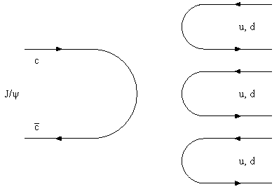
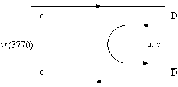
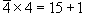
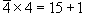

2.4 Шарм и его появление в физике частиц.
Бьюти. Топ
''Till Parisina's fatal charms
Again attracted every eye...''
Lord Byron,
'Parisina'
|
|
Итак, существует три кварка!
В течение 10 лет именно так и полагали,
но затем случилось неожиданное.
В ноябре 1974 на Брукхевенском
ускорителе протонов на 28 ГэВ(США) и на встречных
кольцах SPEAR (SLAC,США) была открыта J/ψ-частица
- векторный мезон, распадающийся по
адронному каналу на пионы, с неожиданно большой
массой 3100 МэВ и неожиданно большим временем
жизни и соответствено малой шириной, примерно 100
Кэв, тогда как для адронов характерные ширины
колебались от 150 Мэв для ρ-мезона до 8 Мэв для
ω и 4 Мэв для φ-мезонов.
Проведя аналогию с подавлением распада на пионы
векторного φ-мезона,
который, как полагают , в основном является
состоянием (s ) сделали
вывод, что самым простым решением является
гипотеза о существовании 4-го кварка с новым
квантовым числом "charm". Тогда J/ψ(3100) будет состоянием ( ) сделали
вывод, что самым простым решением является
гипотеза о существовании 4-го кварка с новым
квантовым числом "charm". Тогда J/ψ(3100) будет состоянием ( c). c).

А как быть с массой шармового кварка? Сделаем
смелое предположение, что как и в случае с φ(1020)-мезона, когда
масса мезона равна удвоенной массе странного
кварка (500 МэВ), масса очарованного кварка
составляет половину массы J/ψ(3100)-частицы,
т.е. 1500 МэВ, более чем в полтора раза превышая
массу протона.
Но тем самым было предсказано
существование мезонов с шармом с кварковым
содержанием ( c), (u), ( c), (u), ( c),
(d) , а также (c) и ( s). Поскольку шарм в сильных
взаимодействиях должен сохраняться так же, как
сохраняется странность, они должны распадаться
по слабому взаимодействию с потерей шарма. Для
простоты предположим, что массы этих мезонов
просто складываются из масс соответствующих
кварков. c),
(d) , а также (c) и ( s). Поскольку шарм в сильных
взаимодействиях должен сохраняться так же, как
сохраняется странность, они должны распадаться
по слабому взаимодействию с потерей шарма. Для
простоты предположим, что массы этих мезонов
просто складываются из масс соответствующих
кварков.
Еще раз используем аналогию с φ(1020)-мезоном, основным
каналом распада которого является распад на
каон(490)-антикаон(490), и рождение которого с
последующим распадом по этому каналу является
доминирующим процессом при энергии
электрон-позитронных колец 1020 МэВ.
Если существует аналог J/ψ(3100)-частицы с большей массой,
а именно, в районе 2 × (1500+300) МэВ, то такой мезон
должен охотно распадаться на шармовые мезоны. Но
такой мезон действительно был обнаружен, это
векторная ψ(3770)-частица,
основным каналом ее распада является распад на
два шармовых мезона, причем ширина распада
составляет более 20 МэВ !!!

Обнаруженные шармовые мезоны распадаются, как
и ожидалось, по слабому взаимодействию, что видно
уже по характерному для слабых взаимодействий
времени их жизни на уровне 10-12 - 10-13 сек.
Группа унитарной симметрии, по которой
следует теперь проводить классификацию частиц,
возрастает до группы SU(4). Правда, использовать ее
аналогично группе SU(3) для построения массовых
формул и т.п. навряд ли возможно из-за слишком
больших разниц масс между частицами, соразмерных
уже с самими величинами масс частиц. Во всяком
случае этот вопрос требует специальных
исследований.
В модели с 4 кварками мезоны будут
преобразовываться по представлениям группы SU(4),
содержащимся в разложении прямого произведения 4
на   или  или
где теперь
|